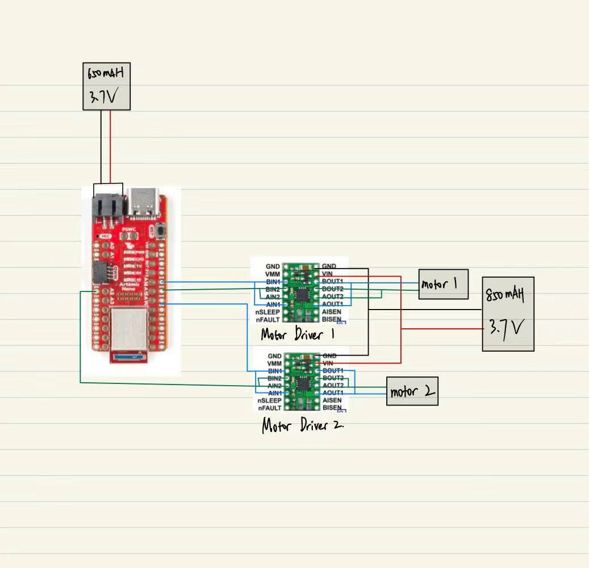
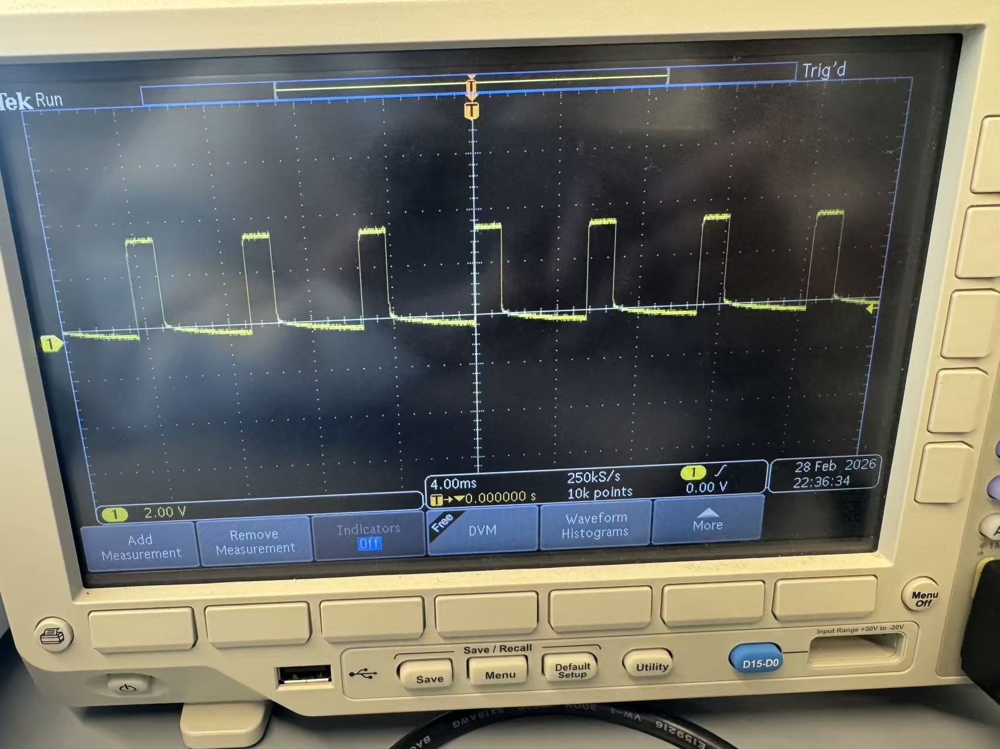
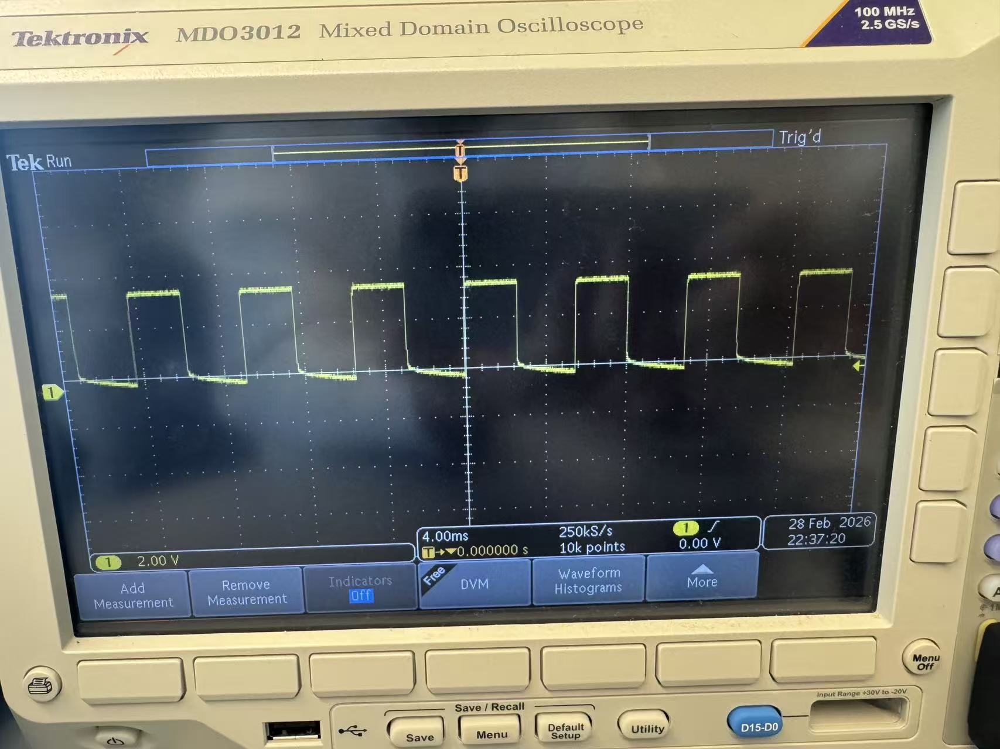
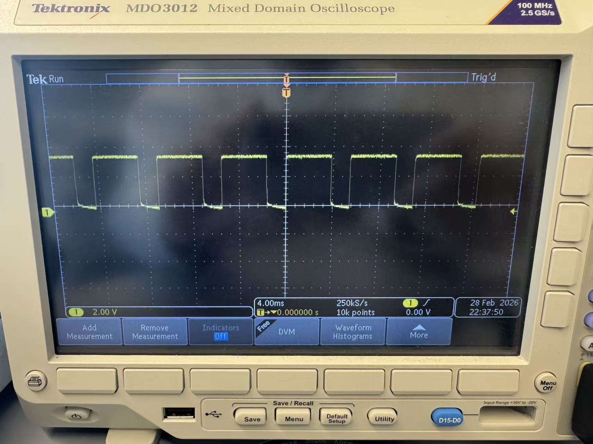
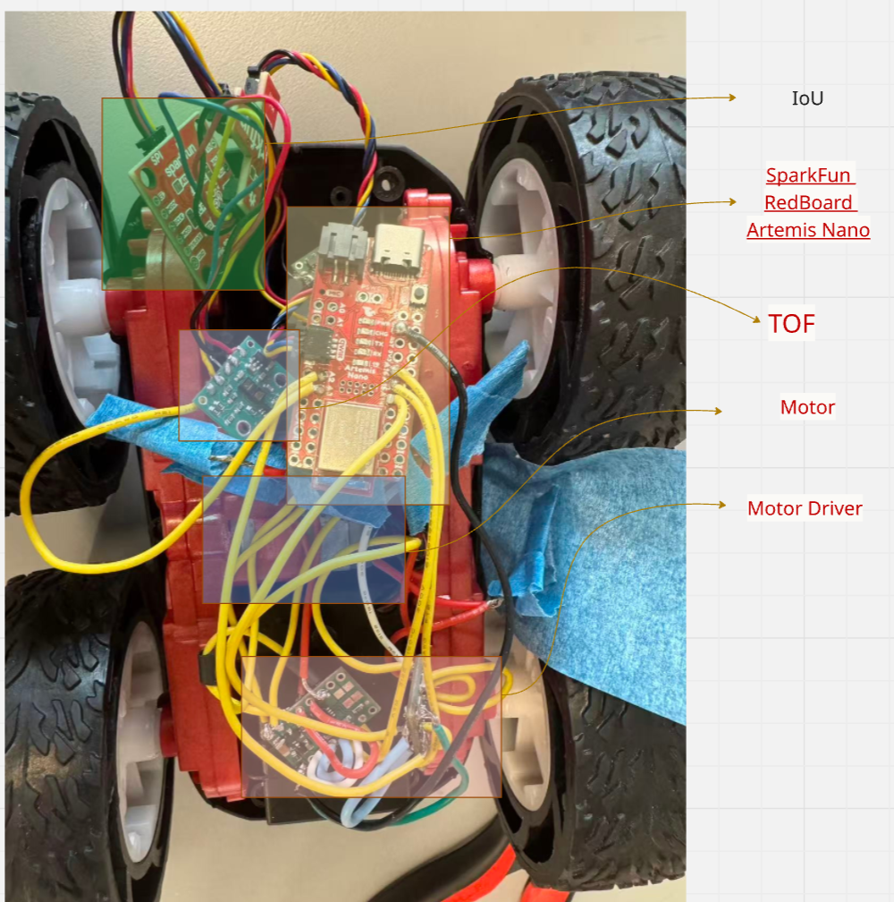

Lab 4: Motors and Open Loop Control
Xingzhi Qian (xq87)
Lab 4
Goals
-
The goal of Lab 4 is to implement PWM-based motor control and transition the robot from manual operation to fully autonomous open-loop motion using the Artemis microcontroller and motor drivers.
Prelab
- This diagram shows the wiring between the Artemis, two motor drivers, and the batteries. The Artemis is powered by a 650 mAh 3.7 V battery, while the motor drivers are powered separately by an 850 mAh 3.7 V battery. GPIO pins 16 and 15 control Motor 1, and GPIO pins 2 and 14 control Motor 2. All grounds are connected together, and PWM signals from these GPIO pins drive the motor driver inputs, with each motor connected to the corresponding OUT1/OUT2.
- Separate batteries were used for the Artemis and the motor drivers.This isolates the large transient current and electrical noise generated during motor startup from the microcontroller supply, reducing voltage sag and preventing unexpected resets. With a common ground shared between the systems, the PWM control signals remain properly referenced while overall operation stays stable.

Lab Tasks
PWM Verification (Oscilloscope)
-
To verify that the Artemis could generate valid PWM control signals for the motor drivers,
I used
analogWrite() to output PWM on the motor control GPIO pin and measured
the waveform using the oscilloscope. I tested three PWM values (60, 120, and 180) while
keeping the wiring and measurement setup unchanged. As expected, increasing the PWM value
increased the duty cycle (pulse width) while the switching frequency remained approximately
constant, confirming that motor power can be regulated by duty-cycle modulation.



Single Motor Test
-
To validate individual motor operation, the robot was placed on its side so that the wheels
were elevated and free to spin without ground contact. I activated one motor at a time
using PWM control to confirm correct wiring, direction control, and speed modulation.
The motor responded consistently to forward and reverse commands, verifying proper
functionality of the motor driver and GPIO connections before full ground testing.
Single-Side Motor Test Code
void forward(int pwm) {
analogWrite(L_IN1, pwm);
analogWrite(L_IN2, 0);
// Right motor disabled for single-side testing
// analogWrite(R_IN1, pwm);
// analogWrite(R_IN2, 0);
}
void reverse(int pwm) {
analogWrite(L_IN1, 0);
analogWrite(L_IN2, pwm);
// Right motor disabled for single-side testing
// analogWrite(R_IN1, 0);
// analogWrite(R_IN2, pwm);
}
void stopMotors() {
digitalWrite(L_IN1, LOW);
digitalWrite(L_IN2, LOW);
// digitalWrite(R_IN1, LOW);
// digitalWrite(R_IN2, LOW);
}
Final Vehicle Integration
-
All components, including the Artemis board, motor drivers, and batteries, were secured inside the chassis with proper wire routing to ensure stable operation during untethered ground testing.

Ground Test (Short Run)
-
The fully assembled robot was tested on the ground using battery power in an untethered configuration. A PWM value of 150 was applied for 1.2 second, after which the motors were stopped. The robot successfully executed short forward motion and came to rest as expected.
Short Ground Run Code
int PWM = 150;
void setup() {
pinMode(L_IN1, OUTPUT);
pinMode(L_IN2, OUTPUT);
pinMode(R_IN1, OUTPUT);
pinMode(R_IN2, OUTPUT);
forward(PWM);
delay(1200);
stopMotors();
}
void loop() {}
void forward(int pwm) {
analogWrite(L_IN1, pwm);
analogWrite(L_IN2, 0);
analogWrite(R_IN1, pwm);
analogWrite(R_IN2, 0);
}
void stopMotors() {
analogWrite(L_IN1, 0);
analogWrite(L_IN2, 0);
analogWrite(R_IN1, 0);
analogWrite(R_IN2, 0);
}
Minimum PWM Characterization
-
To determine the minimum PWM required to initiate motion, PWM values were gradually increased in 5 while observing motor behavior on the ground. The motors began consistent forward motion at approximately PWM = 45. Below this threshold, the motors produced vibration but were unable to overcome static friction. Once the robot was already moving, it could continue operating at slightly lower PWM values, demonstrating the difference between static and dynamic friction. This experiment confirms that initial startup requires greater torque than steady-state motion.
Straight-Line Calibration
-
During initial testing, the robot exhibited a slight drift due to differences in motor characteristics and mechanical friction. To correct this, a calibration factor of 0.9 was applied to one motor’s PWM signal. After tuning, the robot was able to travel approximately 2 meters in a straight line with significantly reduced lateral deviation. This highlights the importance of compensating for motor mismatch in open-loop control systems.
Straight-Line Calibration Code
int BASE_PWM = 150;
float RIGHT_K = 0.97;
void setup() {
pinMode(L_IN1, OUTPUT);
pinMode(L_IN2, OUTPUT);
pinMode(R_IN1, OUTPUT);
pinMode(R_IN2, OUTPUT);
forward(BASE_PWM, BASE_PWM * RIGHT_K);
delay(1800);
stopMotors();
}
void loop() {}
void forward(int pwmL, int pwmR) {
analogWrite(L_IN1, pwmL);
analogWrite(L_IN2, 0);
analogWrite(R_IN1, pwmR);
analogWrite(R_IN2, 0);
}
void stopMotors() {
analogWrite(L_IN1, 0);
analogWrite(L_IN2, 0);
analogWrite(R_IN1, 0);
analogWrite(R_IN2, 0);
}
Open-Loop Motion Execution
-
The robot was programmed to execute a predefined open-loop motion sequence consisting of forward motion, a timed turn, and a second forward segment. All movements were controlled purely by time delays and PWM signals without sensor feedback. While the robot successfully completed the programmed sequence, slight variation in trajectory was observed between trials, reflecting the inherent limitations of open-loop control without real-time correction.
Open-Loop Motion Code
// ===== Task 10 =====
void setup() {
pinMode(L_IN1, OUTPUT);
pinMode(L_IN2, OUTPUT);
pinMode(R_IN1, OUTPUT);
pinMode(R_IN2, OUTPUT);
forward(PWM);
delay(1200);
stopMotors();
delay(300);
turnLeft(PWM);
delay(450);
stopMotors();
delay(300);
forward(PWM);
delay(800);
stopMotors();
}
void loop() {}
void forward(int pwm) {
analogWrite(L_IN1, pwm);
analogWrite(L_IN2, 0);
analogWrite(R_IN1, pwm);
analogWrite(R_IN2, 0);
}
void turnLeft(int pwm) {
analogWrite(L_IN1, 0);
analogWrite(L_IN2, pwm);
analogWrite(R_IN1, pwm);
analogWrite(R_IN2, 0);
}
void stopMotors() {
analogWrite(L_IN1, 0);
analogWrite(L_IN2, 0);
analogWrite(R_IN1, 0);
analogWrite(R_IN2, 0);
}
5000-Level Analysis
-
PWM Frequency Discussion:
The oscilloscope measurements indicated a stable PWM frequency while varying duty cycle.
The frequency remained approximately constant across PWM values of 60, 120, and 180,
confirming that analogWrite modulates duty cycle rather than frequency. A higher PWM
frequency can reduce audible motor noise and provide smoother torque response, though
the default frequency was sufficient for this application.
-
Lowest Running PWM:
While the minimum PWM required to initiate motion was approximately 35, the robot was
able to continue moving at slightly lower PWM values once already in motion. This behavior
demonstrates the difference between static and dynamic friction. Static friction requires
greater torque to overcome initial resistance, whereas dynamic friction during motion is
lower, allowing sustained movement at reduced power levels.
Appendix
1. An announcement of AI usage
I used AI tools to support parts of this lab, mainly for webpage/HTML formatting, minor code edits and debugging, and polishing the written explanations for clarity and conciseness. Throughout the assignment, I verified the suggestions against the lab requirements, tested changes on my own setup, and made final design and implementation decisions independently based on my own understanding.